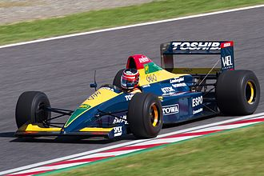
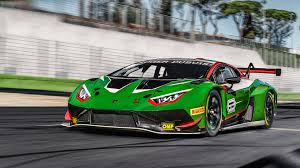

V nasprotju z večino proizvajalcev športnih avtomobilov, ki jim tekmovanja predstavljajo odlično promocijsko sredstvo, Lamborghini Automobili dolgo časa ni neposredno sodeloval na nobenem športnem dogodku; to izbiro so določili tako visoki stroški, potrebni za te dejavnosti, kot tudi natančna podjetniška vizija njenega ustanovitelja Ferruccia Lamborghinija, za katerega dirkanje ni bilo v skladu s podobo praktičnih in udobnih avtomobilov, čeprav izjemno hitrih, ki jih je nameraval zgraditi . Miura je bila ustvarjena z značilnostmi dirkalnika prilagojenega za vsakdanjo rabo. Njen tehnik Dallara pa je znamko zapustil ravno zato, da bi sledil svetu avtomobilnih dirk, preko DeTomasove ponudbe za vodenje njegove nove ekipe Formule 1.
Več kot 20 let so bile edine priložnosti za ogled avtomobilov Lamborghinijeve znamke na dirkališču posledica osebne pobude strank Lamborghinija, ki so zasebno tekmovale s svojimi kupljenimi osebnimi avtomobili. Eden od teh je bil Paul Rilly. Avtomobil Islero francoskega voznika je bil prvi Lamborghini, ki se je leta 1973 prijavil in kvalificiral za znamenito dirko 24 ur Le Mansa, vendar zaradi ene same epizode ni dirkal. Na kvalifikaciji Rilly ni prevozil dovolj hiter krog kvalifikacije, vendar je bil ponovno sprejet na dirko zaradi nekaterih kazni, ki so jih prejeli nekateri vozniki, ki so bili pred njim. Na žalost je novica prispela, ko je Rilly že zapustil dirkališče in ker je bil na cesti, mu tega ni bilo mogoče sporočiti

S pojavom Chryslerja se je začel program za sodelovanje v svetovnem prvenstvu Formule Ena. V ta namen je bil v Modeni ustanovljen ločen oddelek, Lamborghini Engineering, z Audetto kot predsednikom in Maurom Forghierijem kot tehničnim direktorjem. Odločeno je bilo, da se izdela motor V12, imenovan LE3512, ki bo dobavljen bolj izkušenim ekipam. Leta 1989 je opremil avtomobile moštva Larrousse, ki sta ga vozila Philippe Alliot in Yannick Dalmas (kasneje ju je med letom zamenjal Michele Alboreto), leta '90 pa je bil podeljen tudi Lotusu.
Leta '91 sta bila Lotus in Larrousse v krizi in sta bila prisiljena zapustiti Lamborghinijev motor. Na stezo pa je zapeljala tudi prva Formula Ena, ki jo je v celoti izdelal Lamborghini, Lambo 291. Ustanovljena je bila tudi posebna dirkalna ekipa, imenovana Modena Team, ki jo je vodila na dirke. Avtomobili, ki sta jih vozila Nicola Larini in Eric van de Poele, niso osvojili točk in projekt je bil ob koncu sezone zaradi pomanjkanja sredstev zaprt.
Naslednje leto so bili motorji ponovno dobavljeni Larrousseju in italijanskemu Minardiju, ki je skupno osvojil dve točki v sezoni, leta '93 pa samo francoski ekipi, ki je osvojila tri. V tem letu so motor testirali na McLarnih Senne in Häkkinena in zadovoljivi rezultati so pripeljali do predhodnega dogovora za naslednjo sezono, vendar je angleška ekipa enostransko prekinila pogodbo z nenadno spremembo mnenja. Lamborghini se je pritožil, da je sam kril vse stroške posodobitve motorja in njegove prilagoditve britanskemu enosedežniku. Razočaranje zaradi pomanjkanja dogovora je bilo skupaj z dosedanjimi ne izjemnimi rezultati verjetno vzrok za umik Lamborghinija konec leta 1993.
F1 dirkač Lamborghini
Prve uradne pobude Lamborghinija v dirkalnem sektorju segajo v leto 1985, ko je bil Marmiroli imenovan za tehničnega direktorja. Kot inženirja je želel ob sebi Danieleja Audetto, nekdanjega športnega direktorja ekipe Ferrari. Voznik relija Sandro Munari je namesto tega dobil nalogo, da razvije in pilotira posebno različico LM002 za udeležbo na Pariškem Dakarju, vendar je nastopil le na Reliju Faraonov. Portmanu, britanskemu zastopstvu Lamborghini, je bila zaupana izdelava avtomobila skupine C za Le Mans in prvenstvo Prototipov leta 1986. Countach QVX, ki ga je poganjal V12 podjetja in vozila Tiff Needell in Mauro Baldi, je sodeloval samo na 500 km. Kyalamija, nato pa je bil program preklican zaradi pomanjkanja sredstev, potrebnih za razvoj. Izkušnje v skupini C so se nadaljevale pet let pozneje, ko je bil Konrad KM-011 dobavljen s 3,5-litrskimi motorji in uradno podporo, vendar je bil tudi v tem primeru projekt preklican po samo štirih dirkah zaradi pomanjkanja sredstev, rezerviranih zanj.
Leta 1996 je debitirala prva trofeja, rezervirana za Diablo SV-R, dirkalno različico dirkalnika Bologne, ki so jo na stezi razvili Munari, Luigi Moccia in francoz Jean-Luc Chéreau. Organizacija Diablo Supertrofeo je bila zaupana Stéphanu Ratelu, ustvarjalcu prvenstva BPR in svetovnega prvenstva FIA GT. Naslednja tri leta je dogodek potekal z novim Diablo 6.0 GTR.
Murciélago SV-R na tekmovanju tudi pod vodstvom Audija je bila zaveza v tekmovanjih namenjena proizvodnim derivatom, ki zahtevajo manjše vložke in gradijo zvestobo kupcev. Na Bavarskem je bila ustanovljena posebna struktura Reiter Engineering, ki je s podporo matične družbe in Audi Sporta standardne avtomobile predelala v dirkalnike. Prvi plod tega programa je bil Murciélago R-GT, homologiran v razredu GT1 prvenstev FIA GT, serije Le Mans, japonskega Super GT in ameriške serije Le Mans.

GT3 dirkač Lamborghini
Eden od prvih Marmirolijevih projektov je bil 7-litrski motor V12, namenjen opremi Countacha in ki je bil preizkušen tudi na možni evoluciji terenskega vozila LM002. Ta motor ni bil nikoli uporabljen v serijskih avtomobilih, vendar je bil zmogljiv ladijski motor pridobljen s povečanjem prostornine na 8.200 cc, ki je bil nameščen na motornih čolnih razreda C1 na morju. S tem motorjem sta 25. novembra 1994 Norberto Ferretti in Luca Ferrari osvojila prvi naslov svetovnega prvaka za podjetje iz Bologne. Kasneje so Lamborghinijevi motorni čolni osvojili še devet svetovnih prvenstev, od 1997 do 1999 in od 2001 do 2006.